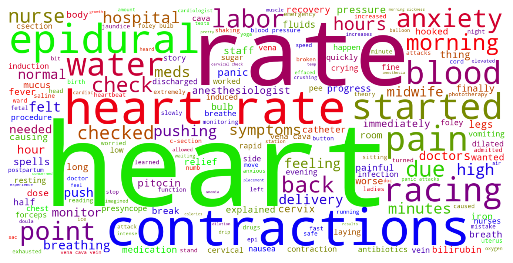

Jump to section:
Samples from Social CorpusHits per UMLS Alias on Social Corpus
Word Cloud Comparison
Embedding Space Comparison
Nearest Neighbors by Semantic Type
Related Analysed Concepts
Samples from Social Corpus
My heart started racing , I was short of breath , I got tunnel vision , and I ended up almost passing out .
Confidence: 0.728. Reddit link
I can barely go to the restroom with out stressing and the slightest cramp makes my heart start racing .
Confidence: 0.693. Reddit link
I'm not having panic attacks , but it's like I am in a constant state of fight with my heart and mind racing , ready for the next argument , the next temper tantrum , the next phone call .
Confidence: 0.770. Reddit link
My husband is just about to call the nurses in when 6 of them come running into the room , helping me turn side to side until we were able to bring his heart rate back up several minutes later .
Confidence: 0.596. Reddit link
Palpitations early on Anyone else experience palpitations or just feeling like your heart is racing almost constantly ?
Confidence: 1.000. Reddit link
However , right at that same time , I started getting these weird episodes where my heart rate will increase to a rapid pace , stay that way for a few minuets , and go back down .
Confidence: 0.776. Reddit link
I've had very extreme nausea and now going onto my 14th week I'm now experiencing my heart racing and trouble breathing at times .
Confidence: 0.693. Reddit link
The second epidural worked for a while , I asked to roll on my side and the nurses helped me - less than ten seconds later they literally threw me on my back again , baby's heart rate dropped super fast in that position so no more laying on my side .
Confidence: 0.671. Reddit link
as i am grabbing these i get a glimpse of the water in the pan and immediately my stomach drops and my heart starts racing .
Confidence: 0.748. Reddit link
I am struggling to eat because of it , it gets 10x worse after I've eaten with me feeling sicker , hot , and my heart starts racing .
Confidence: 0.748. Reddit link
Hits per UMLS Alias on Social Corpus
-
heart racing
134 hits
-
tachycardia
68 hits
-
racing heart
23 hits
-
high pulse rate
23 hits
-
heart rate increased
17 hits
-
rapid heart rate
11 hits
-
rapid heartbeat
9 hits
-
fast heart rate
9 hits
-
increased heart rate
7 hits
-
heartbeats increased
7 hits
-
rapid pulse
3 hits
-
heart rate fast
2 hits
-
increased pulse rate
1 hits
-
tachycardias
1 hits
-
pulse rate increased
1 hits
-
pulse fast finding
1 hits
-
rapid heart beat
0 hits
-
tachycardia unspecified
0 hits
-
pulse fast
0 hits
-
tachycardia nos
0 hits
-
tachycardia pulse
0 hits
-
tachycardia finding
0 hits
-
fast pulse
0 hits
-
cardiac arrhythmia tachycardia
0 hits
-
pulse rapid
0 hits
Word Cloud Comparison
Keywords matching C0039231
Keywords matched against concept. Word size represents frequency.
Keywords co-occurring with C0039231
Co-occurrence is measured at the document-level (i.e. Reddit submissions). Frequencies are normalized to account for keywords common to all CUIs.
Embedding Space Comparison
T-SNE comparison for word embeddings learned from medical domain (EuroPMC) and social media (Reddit) independently.
Pearson correlation for union of closest 1000 neighbors: -0.015
Nearest Neighbors by Semantic Type
Most similar concepts in each of the selected UMLS semantic types. Based on concept embeddings from social corpus.
T184 (Sign or Symptom)
-
C0423636
Heart pain
0.817 Similarity
-
C0235240
Heart pounding
0.745 Similarity
-
C0565619
Fetal distress labor
0.714 Similarity
-
C0476270
Heart symptoms
0.687 Similarity
-
C0795691
Heart problem
0.684 Similarity
-
C0024031
Lower back pain
0.683 Similarity
-
C0013404
Trouble breathing
0.674 Similarity
-
C0235239
Heart fluttering
0.670 Similarity
T201 (Clinical Attribute)
-
C0018810
Heart rate
0.789 Similarity
-
C0007165
Heart output
0.718 Similarity
-
C0231832
Breathing rate
0.644 Similarity
-
C1997846
Heart rate recovery time
0.637 Similarity
-
C1285995
Measure uterine contractions
0.633 Similarity
-
C1275644
Reading add
0.626 Similarity
-
C0035234
Breathing sound
0.618 Similarity
-
C0442709
End diastolic
0.615 Similarity
T047 (Disease or Syndrome)
-
C0003811
Arrhythmia
0.787 Similarity
-
C0340470
Incessant atrial tachycardia
0.777 Similarity
-
C0018799
Heart trouble
0.735 Similarity
-
C0031039
Fluid around heart
0.723 Similarity
-
C0033036
Atrial premature contractions
0.705 Similarity
-
C0018801
Heart failure
0.702 Similarity
-
C0020538
High blood pressure
0.701 Similarity
-
C0340464
Extrasystoles
0.696 Similarity
T060 (Diagnostic Procedure)
-
C0150496
Heart monitoring
0.768 Similarity
-
C2500064
Heart scan
0.735 Similarity
-
C0199637
Heart rate monitoring
0.735 Similarity
-
C4529960
Heart test
0.731 Similarity
-
C0278336
Fetal ecg
0.709 Similarity
-
C0842481
Fetal monitor internal
0.704 Similarity
-
C0013516
Heart ultrasound
0.692 Similarity
-
C0007208
Cardiotocography
0.675 Similarity
T018 (Embryonic Structure)
-
C0015935
Fetal heart
0.766 Similarity
-
C0440731
Fetal brain
0.688 Similarity
-
C0015965
Fetal
0.650 Similarity
-
C0231024
Neural tube
0.551 Similarity
-
C0553522
Cord placenta umbilical
0.536 Similarity
-
C0008508
Chorionic villi
0.527 Similarity
-
C0008503
Chorionic
0.509 Similarity
-
C1278988
Entire placenta
0.506 Similarity
T061 (Therapeutic or Preventive Procedure)
-
C0545508
Pulse taking other
0.759 Similarity
-
C1301849
Uterine contraction monitor
0.672 Similarity
-
C0565239
Atrial overdrive pacing
0.668 Similarity
-
C0588436
Monitored self
0.654 Similarity
-
C1314130
Blood measuring pressure
0.647 Similarity
-
C0018823
Heart transplant
0.643 Similarity
-
C4706576
Increasing drug dose
0.641 Similarity
-
C1260866
Blood oxygenator
0.632 Similarity
T023 (Body Part, Organ, or Organ Component)
-
C0018787
Heart
0.756 Similarity
-
C0729936
Heart chambers
0.720 Similarity
-
C1268110
Heart part
0.699 Similarity
-
C1882687
Rat heart
0.688 Similarity
-
C0446987
Heart wall
0.661 Similarity
-
C0018826
Heart valve
0.638 Similarity
-
C0018827
Ventricle
0.637 Similarity
-
C3498307
Circumventricular organ
0.625 Similarity
T042 (Organ or Tissue Function)
-
C0425583
Heartbeat
0.739 Similarity
-
C0027045
Heart beating
0.707 Similarity
-
C0018820
Heart sound
0.706 Similarity
-
C1959585
Heart rate control
0.687 Similarity
-
C0232102
Blood fluidity
0.625 Similarity
-
C2753527
Heart induction
0.599 Similarity
-
C0005778
Clotting
0.596 Similarity
-
C0231940
Oxygenation
0.583 Similarity
T019 (Congenital Abnormality)
-
C0018798
Heart defect
0.725 Similarity
-
C0266383
Abnormality uterus
0.665 Similarity
-
C0000768
Birth defect
0.649 Similarity
-
C0149530
Congenital heart block
0.624 Similarity
-
C3536558
Complex congenital heart defect
0.617 Similarity
-
C0027794
Neural tube defect
0.607 Similarity
-
C0266387
Bicornuate uterus
0.597 Similarity
-
C0152240
Septate uterus
0.592 Similarity
T074 (Medical Device)
-
C0180647
Internal fetal heart rate monitoring
0.724 Similarity
-
C0182109
Pulse oximeter
0.715 Similarity
-
C0180849
Fetal monitors
0.689 Similarity
-
C3878737
Uternine contraction monitor internal
0.676 Similarity
-
C0005825
Blood pressure monitor
0.673 Similarity
-
C3872996
Fetal doppler system
0.670 Similarity
-
C0179350
Blood gas monitor
0.669 Similarity
-
C0182377
Pressure monitor
0.658 Similarity
T046 (Pathologic Function)
-
C0015927
Iud
0.715 Similarity
-
C0015930
Fetal distress
0.702 Similarity
-
C2362317
High blood pressure pregnancy
0.676 Similarity
-
C0015959
Fetal maternal bleed
0.673 Similarity
-
C0036980
Heart shocking
0.657 Similarity
-
C1458140
Abnormal bleeding
0.644 Similarity
-
C0032993
Post dates
0.640 Similarity
-
C0269810
Sepsis during labor
0.638 Similarity
T039 (Physiologic Function)
-
C2256369
Heart process
0.708 Similarity
-
C0743925
Fetal growth
0.623 Similarity
-
C0232338
Blood flow
0.601 Similarity
-
C0018767
Hear
0.594 Similarity
-
C0035203
Ventilation
0.581 Similarity
-
C0599423
Joint stress
0.573 Similarity
-
C0149784
Reaction stress
0.572 Similarity
-
C0423556
Light pressure touch
0.551 Similarity
T190 (Anatomical Abnormality)
-
C4025734
Anomaly scalp
0.694 Similarity
-
C4732742
Hole center heart
0.651 Similarity
-
C0302142
Anatomic abnormality
0.596 Similarity
-
C0332482
Distortion
0.593 Similarity
-
C0266785
Umbilical cord issue
0.581 Similarity
-
C0269185
Tipped uterus
0.560 Similarity
-
C0332447
Anomaly
0.555 Similarity
-
C4025319
Head stopped growing
0.542 Similarity
T067 (Phenomenon or Process)
-
C0677038
Increase pressure
0.690 Similarity
-
C1947910
Pulsed
0.631 Similarity
-
C0000894
Accelerations
0.616 Similarity
-
C5197751
Sea level rise
0.601 Similarity
-
C0033095
Pressure
0.566 Similarity
-
C0563547
Pressure change
0.554 Similarity
-
C0337240
Fall while being carried
0.530 Similarity
-
C0023983
Long term effects
0.510 Similarity
T034 (Laboratory or Test Result)
-
C0580944
Lying blood pressure
0.643 Similarity
-
C0580945
Blood pressure standing
0.639 Similarity
-
C0241988
M spike
0.634 Similarity
-
C2266672
Clotting time finding
0.618 Similarity
-
C5201036
Low platelets
0.600 Similarity
-
C0588465
Sperm forward progression
0.592 Similarity
-
C3898879
Triple positive
0.585 Similarity
-
C0428554
Blood glucose levels
0.569 Similarity
T049 (Cell or Molecular Dysfunction)
-
C4725191
Stop lost
0.641 Similarity
-
C0544885
Stop gain
0.601 Similarity
-
C0008625
Chromosomal abnormality
0.581 Similarity
-
C1705285
Mutated
0.538 Similarity
-
C0008628
Del
0.528 Similarity
-
C0040715
Translocation
0.512 Similarity
-
C0002938
Aneuploidy
0.510 Similarity
-
C0008631
Markers chromosome
0.494 Similarity
T079 (Temporal Concept)
-
C0039155
Systolic
0.637 Similarity
-
C4329756
During this bowel movement
0.618 Similarity
-
C0807481
Pressure half time
0.591 Similarity
-
C0178795
Perinatal
0.590 Similarity
-
C2985337
Relaxation time between uterine contractions
0.590 Similarity
-
C4025592
Late onset
0.585 Similarity
-
C0449249
Growth rate
0.578 Similarity
-
C0332262
Noted shortly before death
0.572 Similarity
T059 (Laboratory Procedure)
-
C0005771
Blood cell count
0.632 Similarity
-
C0368930
Clotting time
0.627 Similarity
-
C0014772
Counting rbc
0.619 Similarity
-
C0200633
Seg blood count
0.604 Similarity
-
C0018941
Blood test
0.602 Similarity
-
C0850355
Pregnancy blood test
0.601 Similarity
-
C0545131
Cbc diff
0.595 Similarity
-
C0023508
White blood cells
0.594 Similarity
T044 (Molecular Function)
-
C0369768
Oxygen saturation
0.632 Similarity
-
C1149397
Heartless ligand
0.546 Similarity
-
C1150342
Dopachrome rearranging enzyme
0.543 Similarity
-
C1749457
Ligands activity
0.497 Similarity
-
C1721104
Breaks dna
0.485 Similarity
-
C0887940
Gene arrangements
0.474 Similarity
-
C1152025
Docs
0.466 Similarity
-
C0010357
Cross reactive
0.455 Similarity
T032 (Organism Attribute)
-
C0575118
Normal posture
0.631 Similarity
-
C0751992
Fetal weight
0.624 Similarity
-
C0017504
Gestational age
0.592 Similarity
-
C0805393
Breathing spontaneous
0.559 Similarity
-
C0005890
Stature
0.550 Similarity
-
C3714565
Physical condition
0.541 Similarity
-
C0005885
Body composition
0.523 Similarity
-
C1443333
Squatting body position
0.505 Similarity
T048 (Mental or Behavioral Dysfunction)
-
C0563172
Dangerous plans
0.624 Similarity
-
C0003537
Losing words
0.617 Similarity
-
C0547006
Anxiety about blushing
0.611 Similarity
-
C0038436
Ptsd
0.606 Similarity
-
C0232600
Making self sick
0.580 Similarity
-
C0010598
Affective personality
0.578 Similarity
-
C0855228
Disordered eating
0.575 Similarity
-
C0085633
Mood swings
0.573 Similarity
T054 (Social Behavior)
-
C0868443
Beating
0.616 Similarity
-
C0582101
Talking about dying
0.581 Similarity
-
C0422386
Patient suing doctor finding
0.553 Similarity
-
C0683557
Acting as sounding board
0.550 Similarity
-
C0680208
Unconnected
0.536 Similarity
-
C0019421
Straight
0.536 Similarity
-
C0028658
Nurse patient
0.505 Similarity
-
C0679969
Social pressure
0.500 Similarity
T031 (Body Substance)
-
C0162371
Cord blood
0.597 Similarity
-
C0392908
Secretion vaginal
0.569 Similarity
-
C3496630
Swab from uterus
0.559 Similarity
-
C0005767
Blood
0.551 Similarity
-
C0440739
Mixed venous blood
0.548 Similarity
-
C0439057
Early morning urine
0.546 Similarity
-
C0007806
Spinal fluid
0.542 Similarity
-
C1253943
Fluid chest
0.537 Similarity
T005 (Virus)
-
C3743464
Mycobacteriophage whirlwind
0.575 Similarity
-
C3768023
Mycobacteriophage conspiracy
0.526 Similarity
-
C4415400
Phage wrath
0.496 Similarity
-
C0205939
Cold virus common
0.474 Similarity
-
C5058350
Fairfax lookout virus
0.470 Similarity
-
C1220459
Hart park group
0.468 Similarity
-
C0597404
Respiratory virus
0.461 Similarity
-
C3949524
Mischivirus
0.431 Similarity
T041 (Mental Process)
-
C0564404
Stressed out
0.567 Similarity
-
C0025361
Thought process
0.561 Similarity
-
C0871504
Test anxiety
0.560 Similarity
-
C0814069
Visual spatial ability
0.553 Similarity
-
C0424157
Fear going crazy
0.552 Similarity
-
C0017324
Generalization
0.548 Similarity
-
C0679114
Intense emotion
0.529 Similarity
-
C0004309
Listening
0.529 Similarity
T037 (Injury or Poisoning)
-
C1959898
Traumatic injury during pregnancy
0.565 Similarity
-
C1997329
Fall from high place
0.561 Similarity
-
C0686721
Baby shaken
0.560 Similarity
-
C0392012
Crushing abdomen
0.556 Similarity
-
C0269858
Traumatic lesion during delivery
0.551 Similarity
-
C0417108
Jump from burning hospital
0.534 Similarity
-
C0417059
Fall into well
0.526 Similarity
-
C0026771
Wound multiple
0.513 Similarity
T200 (Clinical Drug)
-
C3218395
Papain pill
0.556 Similarity
-
C3216620
Progesterone vaginal product
0.492 Similarity
-
C0307304
Pitocin injection
0.472 Similarity
-
C0723917
Triple antibiotic ointment
0.470 Similarity
-
C1247687
Progesterone suppositories vaginal
0.442 Similarity
-
C4048176
Oxytocin injection
0.440 Similarity
-
C1247002
Misoprostol oral tablet
0.437 Similarity
-
C5222490
Progesterone injection
0.422 Similarity
T100 (Age Group)
-
C3494262
Extremely preterm infant
0.550 Similarity
-
C4048294
Preterm baby
0.522 Similarity
-
C4551581
Full term baby
0.475 Similarity
-
C0596728
65 years old
0.444 Similarity
-
C0680085
Early adulthood
0.420 Similarity
-
C0021289
Newborn
0.417 Similarity
-
C0682054
Mature adult
0.408 Similarity
-
C0920381
1 year old
0.402 Similarity
T101 (Patient or Disabled Group)
-
C0871503
Dying patients
0.536 Similarity
-
C0233363
Monoamniotic twins
0.521 Similarity
-
C0682161
Dually diagnosed
0.512 Similarity
-
C0008098
Child hospitalized
0.504 Similarity
-
C0520954
Fast learner
0.496 Similarity
-
C0242798
Shut
0.494 Similarity
-
C0525064
Deaf
0.475 Similarity
-
C1456639
Living with cancer
0.466 Similarity
T007 (Bacterium)
-
C0018154
Gram positive bacteria
0.509 Similarity
-
C1015849
Wigglesworthia
0.475 Similarity
-
C0022828
L forms
0.460 Similarity
-
C0995648
Genus quinella
0.439 Similarity
-
C2312288
Sharpea
0.401 Similarity
-
C0597134
Flora oral
0.400 Similarity
-
C0579233
Group b strep
0.400 Similarity
-
C0995705
Frankia
0.388 Similarity
T195 (Antibiotic)
-
C0723285
Septa
0.504 Similarity
-
C0310367
Today
0.435 Similarity
-
C0003232
Antibiotics
0.432 Similarity
-
C0013090
Doxycycline
0.396 Similarity
-
C0718575
Antibiotics ear
0.380 Similarity
-
C0076686
Timentin
0.346 Similarity
-
C0030842
Penicillin
0.335 Similarity
-
C0279516
Antibacterial
0.312 Similarity